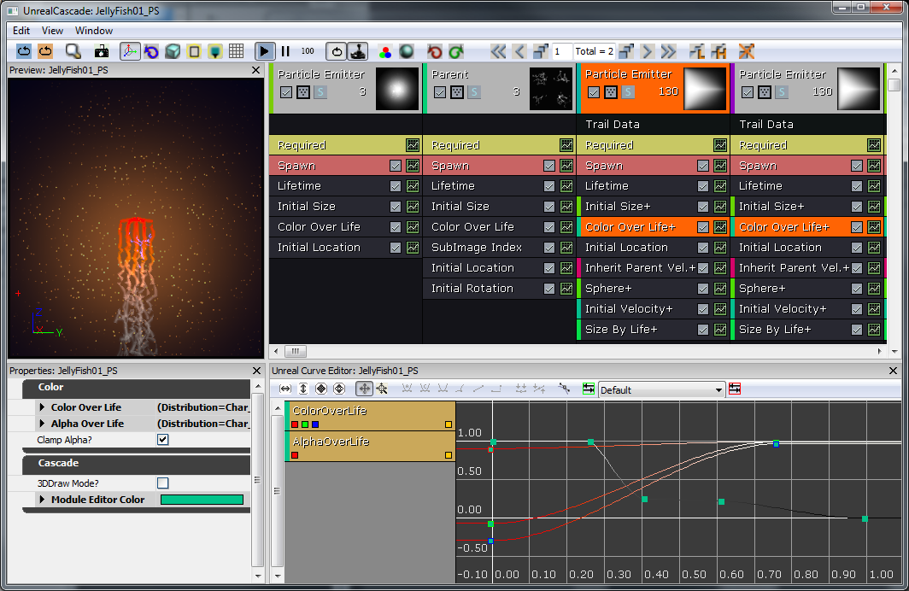

UDN
Search public documentation:
WhizzleCreationDocument
日本語訳
中国翻译
한국어
Interested in the Unreal Engine?
Visit the Unreal Technology site.
Looking for jobs and company info?
Check out the Epic games site.
Questions about support via UDN?
Contact the UDN Staff
中国翻译
한국어
Interested in the Unreal Engine?
Visit the Unreal Technology site.
Looking for jobs and company info?
Check out the Epic games site.
Questions about support via UDN?
Contact the UDN Staff
UDK Home > Whizzle Creation Document
Whizzle Creation Document
Document Changelog: Wiki by Sungjin Hong, Based on pdf v1.2
Overview
Prototypes
The Level
Levels are built in layers, a set of camera facing "2D" planes. This generally consists of about 3 primary layers. The foreground layer is where all the exciting game play exists. The background consists of a blue backdrop and a dark silhouetted extension of the foreground geometry lies between. The level geometry is made almost exclusively of extruded shapes. This greatly simplifies the process for generating levels.The Character
Setup
The Ball collision is a simple sphere mesh with a 'Auto Convex Collision' [Collision > Auto Convex Collision] and 'UseSimpleRigidBodyCollision' checked. The main character is designed to be mostly physics controlled while allowing the player a small amount of control in guiding it around the level. For this reason, the main character started as a subclass of KActor called AquaBall. The character would start as a sphere shape, so we began with a simple sphere with basic rigid body collision. The placeable flag seen below allows the level designer to actually place it in the level.
/*
* Copyright ⓒ 2009 Psyonix Studios. All Rights Reserved.
*
* AquaBall was created to allow for a physics representation of the character in the level
* It's the shape of a sphere, so the ripples in the water will be uniform
* Handles all movement, powers, and events that happen to the player
*/
class AquaBall extends KActorSpawnable
placeable;
DefaultProperties
{
Begin Object Name=StaticMeshComponent0
StaticMesh=StaticMesh'Char_Whizzle.SM.Whizzle_Collision01'
bNotifyRigidBodyCollision=true
HiddenGame=FALSE
ScriptRigidBodyCollisionThreshold=0.001
LightingChannels=(Dynamic=TRUE)
DepthPriorityGroup=SDPG_Foreground
End Object
}
Movement
Constraints Aqua was designed to be a 2D perspective, so it makes sense to constrain movement to only two axes. Z is used for the up and down axis and Y is used as the left and right axis. To constrain the AquaBall and ensure that it will never move in the X axis, spawn a RB_ConstraintActorSpawnable in PostBeginPlay and set up the properties accordingly. Passing in 'none' to InitConstraint(...) actually constrains the ball to the world. Since the ball can only move on the Y and Z axes, the camera (rigidly attached in kismet) will only be able to move in the Y and Z axes as well.
// Initialize ball:
// - Constrain the ball to only move on the Y and Z axis
simulated event PostBeginPlay()
{
local RB_ConstraintActor TwoDConstraint;
super.PostBeginPlay();
// Create the constraint in the world by spawning it. Self is used to set the Owner of the constraint to the ball
// We want to Spawn it at the same location as the ball, which is stored in the Location variable and no rotation
TwoDConstraint = Spawn(class'RB_ConstraintActorSpawnable', self, '', Location, rot(0,0,0));
// bLimited is set to 1 by default, so turn it off for Y and Z to allow Y and Z axis movement
TwoDConstraint.ConstraintSetup.LinearYSetup.bLimited = 0;
TwoDConstraint.ConstraintSetup.LinearZSetup.bLimited = 0;
// Don't allow the ball to swing, which would make it move along the X axis
TwoDConstraint.ConstraintSetup.bSwingLimited = true;
// Initialize the constraint and constrain the ball to the world
TwoDConstraint.InitConstraint( self, None );
}
class AquaPlayerController extends AquaPlayerControllerBase;
// The AquaBall that we are controlling
var AquaBall Ball
// This is the default state while playing the game
state ControllingBall
{
// Ignore events that might cause the player to leave this state
ignores SeePlayer, HearNoise, Bump;
// Process Move is called after Player Move in order to actually set the Velocity, we but do this all in AquaBall
function ProcessMove(float DeltaTime, vector NewAccel, eDoubleClickDir DoubleClickMove, rotator DeltaRot);
// Update the player's movement direction
function PlayerMove( float DeltaTime )
{
if (Ball != None)
{
// RawJoyRight and RawJoyUp and the actual values of how much the player is pressing the joystick up, down, left or right
Ball.AxisInput(PlayerInput.RawJoyRight, PlayerInput.RawJoyUp);
}
}
}
// The initial state PlayerController is sent to, send it to our controlling state at the beginning
auto state PlayerWaiting
{
exec function PressStart()
{
}
Begin:
// Wait half a second before going into controlling ball state, so the ball doesn't move around before the player can actually see it
Sleep(0.5f);
Initialize();
GotoState('ControllingBall');
}
class AquaBall extends KActorSpawnable
placeable;
// In value is speed out value is push amount
var() InterpCurveFloat InputPushAmountCurve;
// A multiplier for how much the joystick pushes the player in the Z-axis
var() float InputPushAmountY;
// A multiplier for how much the joystick pushes the player in the Y-axis
var() float InputPushAmountZ;
// Caps input at this level, so it will go from -1 to this threshold
// setting it equal to 0 will mean no up force
var() float InputThresholdZ;
// Y is left and right, Z is up and down.... always between -1 and 1
var vector MovementDirection;
// Called from the PlayerController to set the direction the character should be moving in
simulated event AxisInput(float AxisRight, float AxisUp)
{
MovementDirection.Y = AxisRight;
MovementDirection.Z = AxisUp;
}
// Update the character's push forces every Tick
simulated event Tick(float DT)
{
super.Tick(DT);
// Do Input Push
AddInputForce( DT );
}
// Use the player's input to determine the direction the character should be pushed
simulated function AddInputForce(float DeltaTime)
{
local vector PushVector;
local float InputForceMultiplier;
// If the player is barely holding the joystick, don't allow player to move from that input
// Basically allows for hard coded deadzone
if( VSize(MovementDirection) < 0.2f )
return;
// Change the input force multiplier based on a curve
InputForceMultiplier = EvalInterpCurveFloat( InputPushAmountCurve, VSize(Velocity) );
// Store the actual direction that the ball should move
PushVector = MovementDirection;
// Only allow the player to move up in the Z direction a small amount depending on what InputThresholdZ is set to
PushVector.Z = FMin(InputThresholdZ, PushVector.Z);
// Increase the direction of the push by the multipliers (Constant + Curve)
PushVector.Y *= InputPushAmountY * InputForceMultiplier;
PushVector.Z *= InputPushAmountZ * InputForceMultiplier;
// Actually add the force to the Ball over a few frames
StaticMeshComponent.AddImpulse(PushVector * DeltaTime);
}
DefaultProperties
{
Begin Object Name=StaticMeshComponent0
StaticMesh=StaticMesh'Char_Whizzle.SM.Whizzle_Collision01'
bNotifyRigidBodyCollision=true
HiddenGame=FALSE
ScriptRigidBodyCollisionThreshold=0.001
LightingChannels=(Dynamic=TRUE)
DepthPriorityGroup=SDPG_Foreground
End Object
InputPushAmountY=3000
InputPushAmountZ=2000
InputThresholdZ=0.1f
InputPushAmountCurve=(Points=((InVal=0.0,OutVal=1.0),(InVal=600.0,OutVal=2.00),(InVal=2000,OutVal=6.0f),(InVal=4000,OutVal=16.0f)))
}
// How much gravity should be applied to the ball
// This is done custom because we don't want gravity on everything else
var() float Gravity;
// Update the character's push forces every Tick and rotation
simulated event Tick(float DT)
{
super.Tick(DT);
// Do Gravity
AddGravityForce( DT );
// Do Input Push
AddInputForce( DT );
}
// Add the gravity force
simulated function AddGravityForce(float DeltaTime)
{
// Gravity should always push down so use -1 in the Z axis for pushing down
StaticMeshComponent.AddImpulse(vect(0,0,-1) * Gravity * DeltaTime);
}
DefaultProperties
{
Begin Object Name=StaticMeshComponent0
StaticMesh=StaticMesh'Char_Whizzle.SM.Whizzle_Collision01'
HiddenGame=FALSE
LightingChannels=(Dynamic=TRUE)
DepthPriorityGroup=SDPG_Foreground
End Object
Gravity=3500
InputPushAmountY=3000
InputPushAmountZ=2000
InputThresholdZ=0.1f
InputPushAmountCurve=(Points=((InVal=0.0,OutVal=1.0),(InVal=600.0,OutVal=2.00),(InVal=2000,OutVal=6.0f),(InVal=4000,OutVal=16.0f)))
}
Making the game work
Setting the Map to start up To set your own custom map to start up, just change a few variables in DefaultEngine.ini. The main one that is used is LocalMap, so change it to use your map file name:[Configuration] BasedOn=..\Engine\Config\BaseEngine.ini [URL] MapExt=ut3 Map=Default.ut3 LocalMap=Level01.ut3 TransitionMap=Default.ut3 EXEName=UTGame.exe DebugEXEName=DEBUG-UTGame.exe GameName=Unreal Tournament 3 GameNameShort=UT3
/*
* Copyright ⓒ 2009 Psyonix Studios. All Rights Reserved.
*/
class AquaGame extends GameInfo;
DefaultProperties
{
// Make sure to specify the package name before the class name
PlayerControllerClass=class'AquaGame.AquaPlayerController'
}
[Configuration] BasedOn=..\Engine\Config\BaseGame.ini [Engine.GameInfo] DefaultGame=AquaGame.AquaMenuGame DefaultServerGame=AquaGame.AquaMenuGame PlayerControllerClassName=AquaGame.AquaPlayerController
Effects
For our first effect, we wanted to sell that this game is under water. Up to this point bubbles didn't exist in our world, so let's add a bubble trail to the player. First we need our bubble material. Right-click in the Content Browser and create a Material. So this is a more complicated route to achieving a bubble. Certainly you could have painted a nice bubble texture, however, I already had a nice "sphere" normal map, so instead of wasting time (and texture memory), why not make a bubble this way? Here's what's going on in the picture: The 'Texture Sample' is our "sphere" normal map. The RGB portion (black output) is passed into a 'Fresnel' to achieve a halo effect. The 'Fresnel' is then passed into a 'Multiply' with the alpha of a 'Vertex Color' We are using 'Vertex Color' as a means for our bubble trail particle system to fade the bubble in and out as desired. This 'Multiply' feeds into the 'Emissive' input of the material. The 'BlendMode' is set to 'BLEND_Additive' so that we don't need to input anything into 'Opacity' to give the bubble translucency. In effect, the 'Emissive' serves as our color and opacity. Finally, the 'LightingModel' is set to 'MLM_Unlit' because we don't need (or want) the bubble to receive lighting. So we've got a suitable material to use in a Particle System. Right-click in the Content Browser again and add a ParticleSystem. So I wanted a trail of bubbles spawning off the ball at any given speed. By default, particle systems use a fixed spawn rate. I opted to use a 'Spawn PerUnit' module instead. Basically, this will spawn a particle every X amount of units (10 in this case) the particle system traverses. This prevents situations where the spawn rate is too high or too low based on the players movement speed. Let's go through the rest of the modules in order:- Lifetime - 1-2 seconds.
- Initial Size - 6-20 (only need to set X because they're uniformly scaled)
- Sphere - 'StartRadius' of 8, 'Velocity' set to true, 'VelocityScale' is 16. This will spawn the bubbles in an 8 unit radius and then push them outward.
- Inherit Parent Velocity - -0.25 for X, Y, and Z. This will take the players world velocity and then multiply it by negative 0.25 so the bubbles appear to thrust the player.
- Velocity/Life - This is curve. X and Y values ramp from 1 to 0.25 over the time period of 0 through 0.5, Z remains 1. This dampens all horizontal movement.
- Acceleration - Z is set to 200. This makes the bubbles rise (as they should!)
- Orbit - 'OffsetAmount' Y is 0-48, 'RotationRateAmount' X is -1 to 1. This makes the bubbles trajectory erratic.
- Color Over Life - As pictured in the curve editor, the Alpha ramps from 0 to 1 and then back to 0, the color is irrelevant.
Begin Object Class=ParticleSystemComponent Name=Bubbles
bAutoActivate=true
Template=ParticleSystem'Char_Whizzle.FX.BubbleTrail01_PS'
End Object
Components.Add(Bubbles)
Implementation
Visible Character
Setup
The Whizzle character was created and rigged in 3ds Max. The skeletal setup is done as it normally would be, with all bones parented to one root bone, and the character is then skinned to the necessary bones. The mesh and skeleton are then exported in a proprietary format, .PSK, using the Epic plugin "ActorX" (ActorX on UDN). Doing so requires setting an Output path, a filename, and the necessary flags. In the case of Whizzle the flags that were turned on were:- All skin-types
- Bake smoothing groups
class AquaCharacter extends KAssetSpawnable
placeable;
DefaultProperties
{
BlockRigidBody=false
Begin Object Name=MyLightEnvironment
bEnabled=false
End Object
Begin Object Name=KAssetSkelMeshComponent
Animations=None
// Set up the Skeletal mesh reference
SkeletalMesh=SkeletalMesh'Char_Whizzle.SK.Wizzle01_SK'
// Add any anim sets and anim trees for later use
AnimSets.Add(AnimSet'Char_Whizzle.SK.Whizzle01_Animset')
PhysicsAsset=PhysicsAsset'Char_Whizzle.SK.Wizzle01_Physics'
AnimTreeTemplate=AnimTree'Char_Whizzle.SK.Whizzle01_Animtree'
MorphSets(0)=MorphTargetSet'Char_Whizzle.SK.Whizzle01_MorphSet'
// If the character has a Physics Asset, make sure to set this to true
bHasPhysicsAssetInstance=true
bUpdateKinematicBonesFromAnimation=true
bUpdateJointsFromAnimation=true
// Use 0 physics weight, so the character is completely moved by animation
PhysicsWeight=0.0f
// Collision flags that should all be set to false, so the skeletal mesh should not collide with anything
BlockRigidBody=false
CollideActors=false
BlockActors=false
BlockZeroExtent=false
BlockNonZeroExtent=false
RBChannel=RBCC_GameplayPhysics
RBCollideWithChannels=(Default=true,BlockingVolume=true,EffectPhysics=true,GameplayPhysics=true)
// Set a high RBDominanceGroup so the AquaBall can pull the AquaCharacter, but the AquaCharacter can't have any physics pulling on the Ball
RBDominanceGroup=30
// Set the character to show up in the foreground by default
DepthPriorityGroup=SDPG_Foreground
LightingChannels=(Dynamic=TRUE,Gameplay_1=TRUE)
Rotation=(Yaw=0)
End Object
}
Attaching AquaCharacter to AquaBall
Spawn the AquaCharacter in PostBeginPlay() of AquaBall. To attach the AquaCharacter to the AquaBall use another RB_ConstraintActorSpawnable. Make sure to use InitConstraint(...) this time between the ball and the character and specify the bone to attach to. Now in the AquaBall StaticMeshComponent set HiddenGame=TRUE, so the AquaBall's mesh is no longer seen (don't want it to interfere with the actual character mesh).
// The character that is attached to this ball (the actual Fizzle you see on the screen)
// Store this reference for use later for playing animations and such
var AquaCharacter Character;
// Initialize ball:
// - Constrain the ball to only move on the Y and Z axis
// - Spawn the visible character
simulated event PostBeginPlay()
{
local RB_ConstraintActor TwoDConstraint;
super.PostBeginPlay();
TwoDConstraint = Spawn(class'RB_ConstraintActorSpawnable', self, '', Location, rot(0,0,0));
TwoDConstraint.ConstraintSetup.LinearYSetup.bLimited = 0;
TwoDConstraint.ConstraintSetup.LinearZSetup.bLimited = 0;
TwoDConstraint.ConstraintSetup.bSwingLimited = true;
TwoDConstraint.InitConstraint( self, None );
SpawnCharacter();
}
// Spawn the visible character mesh that can be seen
// Constrain the character to the ball so he's always upright
simulated function SpawnCharacter()
{
local RB_ConstraintActor CharacterConstraint;
// Specify the AquaCharacter class to spawn and spawn it at the AquaBall's location with no rotation
Character = Spawn(class'AquaCharacter', self, '', Location, rot(0,0,0));
// we want character to be in a 2 : 1.5 ratio to this collision
Character.SetDrawScale(DrawScale * 1.33333f);
// Spawn the Constraint to the ball
CharacterConstraint = Spawn(class'RB_ConstraintActorSpawnable', self, '', Location);
// Don't allow any twisting around, we will handle rotation manually later on if we want the character to rotate while moving
CharacterConstraint.ConstraintSetup.bSwingLimited = true;
CharacterConstraint.ConstraintSetup.bTwistLimited = true;
// Initialize the constraint between the character and the AquaBall on the bone 'b_Head'
CharacterConstraint.InitConstraint(Character, self, 'b_Head');
}
DefaultProperties
{
Begin Object Name=StaticMeshComponent0
StaticMesh=StaticMesh'Char_Whizzle.SM.Whizzle_Collision01'
// Hide the Ball mesh now because only the AquaCharacter's skeletal mesh should be visible
HiddenGame=TRUE
LightingChannels=(Dynamic=TRUE)
DepthPriorityGroup=SDPG_Foreground
End Object
}
Animations
Now that we have a character, we need to breathe life into him! All of the animations were created in 3ds Max using the same mesh and skeleton that we exported earlier. Once an animation had been completed it was exported using ActorX. Exporting animations through ActorX will give us .PSA files. Once in the editor we opened the Whizzle mesh and created a new AnimSet (AnimSet User Guide) for it from the File menu. The AnimSet will be used to hold all of the animations for this character. After that was created we imported all of our .PSA files into the AnimSet. Having the AnimSet populated with animations allows us to move on to the AnimTree (AnimTree User Guide). We wanted our character to be as lively as possible and to blend from one animation to another depending on his interactions in the world. The AnimTree was set up so that by default the idle animation would always be playing and AnimNodeBlends branched off from that to play the other animations. Some animations, such as the "Fizzle_Struggle" were set up as looping animations, while others were set to only play once using the "bCauseActorAnimEnd" flag. The blend node names allowed the animations to be called on through code when the appropriate events were played. The character primarily faces the camera but we wanted the player to be able to control his movements to an extent. For that we added an AnimNodeAimOffset at the beginning of the AnimTree so that we could rotate the root bone and have the Whizzle "look" the direction the player was guiding him.Captured Fizzles
The main gametype will have the main goal to free the captured Fizzles. So first, some captured Fizzles will need to be created. In order to free them, the player will have to smash into their jail cells and break them for the Fizzles to break out. To have a cool smashing effect, we will use a FracturedStaticMeshActor subclass. First we will need a FracturedStaticMesh to use for content. Fracture meshes are created from a static mesh that has collision. A simple cage was modeled and imported into UE3 as an .ASE file. Opening the static mesh in the editor, we applied a 6DOP Simplified collision (a basic box collision) and hit the "Fracture Tool" button. Given how small the cage is on screen, and that we didn't want a lot of chunks for it, we set the Num Chunks to 8. Otherwise all defaults were used. There will probably be other objects in the game that are breakable like this later on, so a super class called AquaFractureMeshActor should be created. We will assume that the basic functionality is that anything breakable will be broken by calling an event which will cause all of the pieces of the mesh to be broken off. Other classes can call the event BreakBarrier(...) to break apart the Fizzles' cages. Also, overwrite the Explode() function to allow to disable the Default collision channel. Having it enabled makes the Fracture pieces break off in an unreliable and crazy manner. Sadly, to do this we must copy the whole function because the engine does not expose the setting of properties on each part that is spawned. Also, make sure Explode() can only be called once. Finally, when the thing explodes, turn off it's collision because that doesn't happen by default.
/*
* Copyright ⓒ 2009 Psyonix Studios. All Rights Reserved.
*/
class AquaFractureMeshActor extends FracturedStaticMeshActor;
var bool bExploded;
var AquaPlayerController PlayerThatHitMe;
// A simple way to make sure this barrier gets broken on the first hit
event BreakBarrier( Controller EventInstigator, vector HitNormal )
{
// Store the player that broke this Mesh for use in subclasses
PlayerThatHitMe = AquaPlayerController(EventInstigator);
Explode();
}
// Make sure explode only happens once
// Also set the lighting channel of the parts
simulated event Explode()
{
local array<byte> FragmentVis;
local int i;
local vector SpawnDir;
local FracturedStaticMesh FracMesh;
local FracturedStaticMeshPart FracPart;
local float PartScale;
local ParticleSystem EffectPSys;
// Don't allow explode to be called more than once
if(bExploded)
return;
bExploded = true;
FracMesh = FracturedStaticMesh(FracturedStaticMeshComponent.StaticMesh);
// Particle Systems
// Look for override first
if(OverrideFragmentDestroyEffects.length > 0)
{
// Pick randomly
EffectPSys = OverrideFragmentDestroyEffects[Rand(OverrideFragmentDestroyEffects.length)];
}
// No override array, try the mesh
else if(FracMesh.FragmentDestroyEffects.length > 0)
{
EffectPSys = FracMesh.FragmentDestroyEffects[Rand(FracMesh.FragmentDestroyEffects.length)];
}
// Spawn emitter in the emitter pool
WorldInfo.MyEmitterPool.SpawnEmitter(EffectPSys, Location);
// Iterate over all visible fragments spawning them
FragmentVis = FracturedStaticMeshComponent.GetVisibleFragments();
for(i=0; i<FragmentVis.length; i++)
{
// If this is a currently-visible, non-core fragment, spawn it off.
if((FragmentVis[i] != 0) && (i != FracturedStaticMeshComponent.GetCoreFragmentIndex()))
{
SpawnDir = FracturedStaticMeshComponent.GetFragmentAverageExteriorNormal(i);
PartScale = FracMesh.ExplosionPhysicsChunkScaleMin + FRand() * (FracMesh.ExplosionPhysicsChunkScaleMax - FracMesh.ExplosionPhysicsChunkScaleMin);
// Spawn part- inherit this actors velocity
FracPart = SpawnPart(i, (0.5 * SpawnDir * FracMesh.ChunkLinVel) + Velocity, 0.5 * VRand() * FracMesh.ChunkAngVel, PartScale, TRUE);
if(FracPart != None)
{
// When something explodes we disallow collisions between all those parts.
FracPart.FracturedStaticMeshComponent.SetRBCollidesWithChannel(RBCC_FracturedMeshPart, FALSE);
// Disallow collisions of the Default collision channel too, so the parts don't go crazy
FracPart.FracturedStaticMeshComponent.SetRBCollidesWithChannel(RBCC_Default, FALSE);
}
FragmentVis[i] = 0;
}
}
// Update the visibility of the actor being spawned off of
FracturedStaticMeshComponent.SetVisibleFragments(FragmentVis);
// Turn off the collision to make sure the player doesn't hit invisible walls
TurnOffCollision();
}
function TurnOffCollision()
{
// Turn off physics
SetPhysics(PHYS_None);
// Turn off Collide and Blocking flags
SetCollision(false, false, false);
// Don't allow blocking rigid body
if (CollisionComponent != None)
{
CollisionComponent.SetBlockRigidBody(false);
}
// Call event that sub classes will use to notify that the mesh is completely broken
OnFractureMeshBroken();
}
// override in sub classes
function OnFractureMeshBroken()
{
Destroy();
}
DefaultProperties
{
bWorldGeometry=FALSE
}
/*
* Copyright ⓒ 2009 Psyonix Studios. All Rights Reserved.
*/
class BreakableCageAndFizzle extends AquaFractureMeshActor
placeable;
DefaultProperties
{
Begin Object Name=FracturedStaticMeshComponent0
StaticMesh=FracturedStaticMesh'Char_CagedWhizzle.SM.Cage01_FRAC'
End Object
DrawScale=1.5f
}
Collection
A GameInfo subclass would be best for handling whether or not the game has been won (FizzleCollectionGame). On PostBeginPlay(), loop through all DynamicActors to count the number of BreakableCageAndFizzles in the game. Set the total number of Fizzles left in the game in the AquaGameReplicationInfo. This class is made just in case we ever need to make the game networked, we'll have our main game state variables in the correct class. Whenever a Fizzle is collected, call FizzleCollected(...) which handles counting how many Fizzles are left in the game.
// how many Fizzles are left in the game?
var int NumberOfFizzles;
// Initialize the amount of fizzles in the game
event PostBeginPlay()
{
Super.PostBeginPlay();
CountFizzles();
}
// Count the number of fizzles in the level, so the player
// knows what the goal is, when we have the number, initialize the other variables
function CountFizzles()
{
local BreakableCageAndFizzle P;
foreach WorldInfo.DynamicActors(class'BreakableCageAndFizzle', P)
{
// Count the number of Fizzles
NumberOfFizzles++;
}
// Make the Number of Fizzles data available in the GameReplicationInfo
AquaGameReplicationInfo(GameReplicationInfo).NumberOfFizzlesRemaining = NumberOfFizzles;
if(NumberOfFizzles < 1)
{
// If the level isn't loaded yet, there would be no BreakableCageAndFizzle actors, so check again after a short amount of time
SetTimer(0.3f, false,'CountFizzles');
}
}
// Called whenever a Fizzle has been set free
// Update the remaining number of fizzles and end the game if there's none left
function FizzleCollected(AquaPlayerController inPlayer)
{
// Decrease the amount of Fizzles left to be freed
NumberOfFizzles--;
// Make sure to keep the GameReplicationInfo up to date
AquaGameReplicationInfo(GameReplicationInfo).NumberOfFizzlesRemaining = NumberOfFizzles;
// If there are no Fizzles left, end the game
if(NumberOfFizzles <= 0)
{
EndGame( inPlayer.PlayerReplicationInfo, "You Won!");
}
}
// When the cage is broken, we want to play animations on the Fizzle
// And set it free
// Also update game info to record one saved
function OnFractureMeshBroken()
{
// Tell the GameInfo to update the amount of remaining Fizzles
FizzleCollectionGame(WorldInfo.Game).FizzleCollected(PlayerThatHitMe);
// Tell the player that a Fizzle was collected. Useful for later when we have a HUD
PlayerThatHitMe.SetFizzleAmount( );
}
The End
When there are no Fizzles left in the game, simple call EndGame(...) in order to send the game into an end game state. When the game is over, set AquaGameReplicationInfo.bGameOver true and 1.5 seconds later AquaGameReplicationInfo.bMatchIsOver is set to true. These two variables will allow special end game handling for things like displaying an end game HUD and also freezing the character at the end of the game.
// Handle what to do when the game is over, if we won then set up the proper variable
function EndGame( PlayerReplicationInfo Winner, string Reason )
{
if(bGameEnded)
return;
// don't end game if not really ready
if ( !CheckEndGame(Winner, Reason) )
{
bOverTime = true;
return;
}
// This flag will be used to start the game over sequence
AquaGameReplicationInfo(GameReplicationInfo).bGameOver = true;
if(Reason ~= "You Won!")
{
// Setting this flag will allow us to know that the game was actually won
AquaGameReplicationInfo(GameReplicationInfo).bWonGame = true;
}
// Allow replication to happen before reporting scores, stats, etc.
SetTimer( 1.5,false,nameof(PerformEndGameHandling) );
bGameEnded = true;
EndLogging(Reason);
}
Abilities
So far, there is an objective of breaking the cages of the Fizzles, but no way to break them! This is where special abilities of the player come in. Add a special function in AquaBall for the initial phase of Super Squirt. This will simply blast the character in whatever direction the player is pointing with the joystick. When the character hits a anything, we'll see if any BreakableCageAndFizzle actors are close by to break! The event RigidBodyCollision(...) is called whenever the AquaBall runs into something that blocks RigidBody (like the world or the cages). When RigidBodyCollision(...) is called, we should do the Exploding power ( SuperSquirtExplodePower() ), which will cause any BreakableCageAndFizzles around to break. RigidBodyCollision(...) is only called if we set up two variables in the StaticMeshComponent of the AquaBall. Set bNotifyRigidBodyCollision to true and ScriptRigidBodyCollisionThreshold to some number greater than 0. The ExplodePower() function makes use of the BarrierCache which is constructed in InitializeVariables(). This allows us to save computation time, so we don't have to search through all DynamicActors everytime we use the Explode power.
// Have a cache of all barriers in the level so we don't use a lot of computing time searching each time we explode
var array<AquaFractureMeshActor> BarrierCache;
// True if we are currently super squirting and can explode when we hit a wall
var bool bCanExplode;
// Multiplier for the amount of force to use for Super Squirt power
var() float SuperSquirtForceMax;
simulated function SuperSquirt()
{
local vector Direction;
// Use the cached direction that the player was pointing with the joystick
Direction = MovementDirection;
// Make sure the player stops movement before giving big boost, so the player can't reach an extremely high speed and get out of the level
StaticMeshComponent.SetRBLinearVelocity(vect(0,0,0));
// Add the Impulse to the character in the Direction with a magnitude of SuperSquirtForceMax
StaticMeshComponent.AddImpulse( Direction * SuperSquirtForceMax,,,true );
// turn on exploding flag, so we only explode once per SquirtSquirt
bCanExplode = true;
}
// If we can explode and we hit something, then do the explode power
simulated event RigidBodyCollision(PrimitiveComponent HitComponent, PrimitiveComponent OtherComponent, const out CollisionImpactData RigidCollisionData, int ContactIndex)
{
Super.RigidBodyCollision( HitComponent, OtherComponent, RigidCollisionData, ContactIndex);
// Do a sanity check here to make sure the thing we're hitting actually has a component
if(OtherComponent != none)
{
// Only allow exploding to happen once
if(bCanExplode)
{
bCanExplode = false;
// Start the explode power!
ExplodePower();
}
}
}
// The exploding power after Super Squirting to break barriers around us
simulated function ExplodePower()
{
local AquaFractureMeshActor Barrier;
foreach BarrierCache( Barrier )
{
if(Barrier == none)
continue;
if( VSize(Location - Barrier.Location) < ExplodePowerRange )
{
Barrier.BreakBarrier( MyController, Normal( Location - Barrier.Location ) );
}
}
}
// Initialize any variables that we might need for later
// This is called right before the ball is registered for input
// So a good place to look for objects in the level
simulated function InitializeVariables()
{
local AquaFractureMeshActor Barrier;
foreach WorldInfo.DynamicActors( class'AquaFractureMeshActor', Barrier)
{
BarrierCache.AddItem( Barrier );
}
}
DefaultProperties
{
Begin Object Name=StaticMeshComponent0
StaticMesh=StaticMesh'Char_Whizzle.SM.Whizzle_Collision01'
// Turn on Rigid Body Collision notifications
bNotifyRigidBodyCollision=true
HiddenGame=TRUE
// Any Rigid Body Collision with a force above 0.001 will cause RigidBodyCollision(...) to be called
ScriptRigidBodyCollisionThreshold=0.001
LightingChannels=(Dynamic=TRUE)
DepthPriorityGroup=SDPG_Foreground
End Object
}
Polish
Air
To add a little bit of challenge to the game, the player should lose air everytime that he uses Super Squirt and picking up Air Bubbles should replenish the air supply. Picking up an object that touches, but doesn't block a KActor can actually be pretty tricky. We'll create a class called AquaPickupable to handle any objects that need to do this, such as the Air Bubbles. The main function used in AquaPickupable is Touch(...), which should include some functionality for playing pickup effects and also call events in the AquaPlayerController class to let the player figure out what to do when something is picked up.
/*
* Copyright ⓒ 2009 Psyonix Studios. All Rights Reserved.
*
* An abstract class for things that the player can pick up
* They should be Static Meshes and not block the player
*/
class AquaPickupable extends DynamicSMActor_Spawnable
abstract;
// true if the object has been picked up already
var bool bPickedUp;
// The effect to play when the object is picked up
var ParticleSystemComponent PickupEffect;
// The AquaBall that picked us up
var AquaBall BallToucher;
// True if we should play the PickupEffect on touch, otherwise it should be handled custom
var bool bPlayEffectOnTouch;
// When the Pickupable is touched by the player, play the pick up effect and call subclassable OnPickup()
// Make sure it can only be picked up once with bPickedUp
event Touch( Actor Other, PrimitiveComponent OtherComp, vector HitLocation, vector HitNormal )
{
if(!bPickedUp && AquaBall(Other) != none)
{
Super.Touch(Other, OtherComp, HitLocation, HitNormal);
bPickedUp = true;
BallToucher = AquaBall(Other);
if(bPlayEffectOnTouch)
PlayPickupEffect(AquaBall(Other));
OnPickup(AquaBall(Other).MyController);
}
}
// overwrite this in subclasses
function OnPickup(AquaPlayerController Player);
// Plays the pickup effect and destroys the pickupable
function PlayPickupEffect(AquaBall Ball)
{
if(PickupEffect != none)
{
PickupEffect.ActivateSystem();
}
Destroy();
}
DefaultProperties
{
Begin Object Class=ParticleSystemComponent Name=PickupEffect0
bAutoActivate=false
DepthPriorityGroup=SDPG_Foreground
End Object
PickupEffect=PickupEffect0
Components.Add(PickupEffect0)
bPlayEffectOnTouch=true
}
DefaultProperties
{
bBlockActors=true
bCollideActors=true
bStatic=false
bWorldGeometry=false
Physics=PHYS_None
bNoEncroachCheck=false
Begin Object Name=StaticMeshComponent0
CollideActors=TRUE
BlockActors=FALSE
BlockRigidBody=FALSE
BlockZeroExtent=TRUE
BlockNonZeroExtent=TRUE
RBCollideWithChannels=(Default=TRUE,BlockingVolume=TRUE,GameplayPhysics=TRUE,EffectPhysics=TRUE,FracturedMeshPart=FALSE)
End Object
}
DefaultProperties
{
// The main static mesh that is used to detect collision with Rigid Body Physics objects
Begin Object Name=StaticMeshComponent0
StaticMesh=StaticMesh'Char_Whizzle.SM.Whizzle_Collision01'
bNotifyRigidBodyCollision=true
HiddenGame=TRUE
ScriptRigidBodyCollisionThreshold=0.001
LightingChannels=(Dynamic=TRUE)
DepthPriorityGroup=SDPG_Foreground
End Object
// This collision object is used to get a touch event from the air and other pickupables
Begin Object Class=StaticMeshComponent Name=StaticMeshComponent1
StaticMesh=StaticMesh'Char_Whizzle.SM.Whizzle_Collision01'
// Make sure it's hidden like our other one
HiddenGame=TRUE
// We only want to collide with actors for touch, don't use Block
CollideActors=TRUE
BlockActors=FALSE
// We have to always check collision on this collision component, so it actually checks for touches
AlwaysCheckCollision=TRUE
RBCollideWithChannels=(Default=TRUE,BlockingVolume=TRUE,GameplayPhysics=TRUE,EffectPhysics=TRUE,FracturedMeshPart=FALSE)
End Object
Components.Add(StaticMeshComponent1)
}
/*
* Copyright ⓒ 2009 Psyonix Studios. All Rights Reserved.
*/
class AirBubble extends AquaPickupable
placeable;
// The amount of air that is given to the player when picked up
var() float AirAmount;
// The velocity that the bubble should drift in after spawning Modified in Tick to change direction
var vector FloatingSpeed;
// The initial location the bubble was spawned at, used to make sure the bubble doesn't drift too far away
var vector OriginalLocation;
// The maximum distance on the Y-axis that the bubble can float away from the OriginalLocation
var float MaxHorizontalFloatDistance;
// A multiplier for which direction the bubble is floating now either 1 or -1
var float CurrentDirection;
// When picked up by Player do the following:
// - Make character play chomping animation
function OnPickup(AquaPlayerController Player)
{
// Call event to play animation for eating the bubble
BallToucher.PlayGotAir();
// Give air to the player
Player.GotAir(AirAmount);
}
// Tick handles the movement of the bubble in the following situations:
// - If the bubble has been picked up, move it closer to the player's mouth
// - By default float up towards the top of the map while drifting left and right
simulated event Tick(float DeltaTime)
{
local vector NewLocation;
local float DistanceFromCenter;
Super.Tick(DeltaTime);
// Update the new location with the new direction we should be floating in
NewLocation = Location;
NewLocation.Z += FloatingSpeed.Z * DeltaTime;
NewLocation.Y += FloatingSpeed.Y * DeltaTime;
// Make sure it doesn't go farther than the max distance away from the Original Location
NewLocation.Y = FClamp(NewLocation.Y, OriginalLocation.Y - MaxHorizontalFloatDistance, OriginalLocation.Y + MaxHorizontalFloatDistance);
// Actually set the location of the Air Bubble
SetLocation(NewLocation);
// Update the speed based on the distance from the center, so it slows down the farther away it is from the original location
DistanceFromCenter = Abs(NewLocation.Y - OriginalLocation.Y) / MaxHorizontalFloatDistance;
FloatingSpeed.Y = FClamp((1 - DistanceFromCenter) * default.FloatingSpeed.Y, 20, default.FloatingSpeed.Y);
// Make sure to switch directions when we reach the left or right boundary
if(Abs(NewLocation.Y - OriginalLocation.Y) >= MaxHorizontalFloatDistance)
{
CurrentDirection *= -1;
}
FloatingSpeed.Y *= CurrentDirection;
}
// Initialize variables and allow for random movement speed
simulated event PostBeginPlay()
{
Super.PostBeginPlay();
// Use to make sure we don't get too far away from the original location
OriginalLocation = Location;
// each bubble should be a random speed, so they don't look like they are all doing the same thing
FloatingSpeed.Z = FRand() * 40 + FloatingSpeed.Z;
// Randomize both axes speeds
FloatingSpeed.Y = FRand() * 25 + FloatingSpeed.Y;
}
DefaultProperties
{
// Collision mesh
Begin Object Name=StaticMeshComponent0
StaticMesh=StaticMesh'Char_Whizzle.SM.Whizzle_Collision01'
HiddenGame=TRUE
Scale=2.4f
End Object
// Bubble effect (the actual visual that you see)
Begin Object Class=ParticleSystemComponent Name=BubbleEffect
bAutoActivate=true
Template=ParticleSystem'Pickup_Bubble.FX.Bubble01_PS'
DepthPriorityGroup=SDPG_Foreground
TranslucencySortPriority=1
End Object
Components.Add(BubbleEffect)
// Don't play any effect wh
PickupEffect=none
CurrentDirection=1
DrawScale=1.5f
MaxHorizontalFloatDistance=100
FloatingSpeed=(Z=120,Y=100)
bPlayEffectOnTouch=false
}
Jellyfish
The Jellyfish were added to allow for an extra fun game mechanic of bouncing, but also a risk by getting shocked when they hit the bottom of the Jellyfish. The Jellyfish started out as just a particle system with a mesh for collision. Later on, it was changed to use a SkeletalMesh for visual effects, so we could play a squishing effect when it gets hit by the player. The Jellyfish particle is made of a large orange sparkle infested glow, a blue electric shock and 8 tentacles represented with trail emitters and random velocity to add noise.  Making the character bounce off of the Jellyfish is really easy using a StaticMeshComponent for collision and turning on the RigidBodyCollision event for it. When RigidBodyCollision(...) gets called, figure out the direction to bounce the player in and then just add an impulse to the player's StaticMeshComponent.
/*
* Copyright ⓒ 2009 Psyonix Studios. All Rights Reserved.
*/
class JellyFishBase extends StaticMeshActorSpawnable
placeable;
// Multiplier for the amount of force given to the player when it hits the jellyfish
var() float BounceForce;
// if Hitting the player, handle electrocution and bouncing the player off
simulated event RigidBodyCollision(PrimitiveComponent HitComponent, PrimitiveComponent OtherComponent, const out CollisionImpactData RigidCollisionData, int ContactIndex)
{
local vector BounceDirection, DirectionToBall;
if(OtherComponent != none)
{
// Get the direction to bounce the player off in
BounceDirection = Normal(RigidCollisionData.TotalNormalForceVector);
BounceDirection.X = 0;
DirectionToBall = Normal(AquaBall(OtherComponent.Owner).Location - Location);
// Sanity check to make sure the Normal is facing the correct way
if(DirectionToBall dot BounceDirection < 0)
{
BounceDirection = -BounceDirection;
}
// Any time the Jellyfish hits a ball, apply the bounce force
// Electrocution will be added later
if( AquaBall(OtherComponent.Owner) != none)
{
AquaBall(OtherComponent.Owner).StaticMeshComponent.AddImpulse(BounceDirection * BounceForce);
}
}
}
DefaultProperties
{
// The main collision mesh for the Jellyfish - used to get RigidBodyCollision events
Begin Object Class=StaticMeshComponent Name=StaticMeshComponent0
LightEnvironment=MyLightEnvironment
bUsePrecomputedShadows=FALSE
StaticMesh=StaticMesh'Char_JellyFish.SM.JellyFish_Collision01'
BlockActors=TRUE
BlockZeroExtent=TRUE
BlockNonZeroExtent=TRUE
BlockRigidBody=TRUE
bNotifyRigidBodyCollision=true
ScriptRigidBodyCollisionThreshold=0.001
HiddenGame=TRUE
End Object
CollisionComponent=StaticMeshComponent0
Components.Add(StaticMeshComponent0)
// The main visual you see for the Jellyfish, the tentacles
Begin Object Class=ParticleSystemComponent Name=ParticleSystemComponent0
bAutoActivate=TRUE
Template=ParticleSystem'Char_JellyFish.FX.JellyFish01_PS'
DepthPriorityGroup=SDPG_World
Translation=(X=64)
End Object
Components.Add(ParticleSystemComponent0)
JellyFishParticle=ParticleSystemComponent0
Physics=PHYS_Interpolating
BounceForce=3500
BlockRigidBody=TRUE
bCollideActors=TRUE
bBlockActors=TRUE
bWorldGeometry=FALSE
bCollideWorld=TRUE
bNoEncroachCheck=FALSE
bProjTarget=TRUE
bUpdateSimulatedPosition=FALSE
bStasis=FALSE
}
// Animation variables used to play the Morphing of the Jellyfish to get squished when a player hits it
// The current time used to calculation how much to morph the morph node
var float BounceTime;
// The max amount of time to play the bouncing morph
var() float MaxBounceTime;
// True if currently playing the bouncing morph
var bool bBouncing;
// The actual morph node that is used in the AnimTree
var MorphNodeWeight BounceMorphNode;
// Start the bouncing effect
simulated function PlayBounce()
{
// turn on bouncing
bBouncing = true;
// reset the bouncing time
BounceTime = 0.0f;
}
// Initialize variables
simulated event PostBeginPlay()
{
Super.PostBeginPlay();
SetTimer(0.3f, false, nameof(FindMorphNode));
}
// Make sure the morph node can be found
simulated function FindMorphNode()
{
BounceMorphNode = MorphNodeWeight(SkeletalMeshComponent.FindMorphNode('BounceMorphNode'));
if(BounceMorphNode == none)
{
SetTimer(0.3f, false, nameof(FindMorphNode));
return;
}
// Initialize the weight of the Morph to 0, so it looks like it's in it's original position
BounceMorphNode.SetNodeWeight(0.0f);
}
// Update the bouncing effect
event Tick(float DeltaTime)
{
local vector DirectionToMove;
local float Delta;
Super.Tick(DeltaTime);
if( bBouncing )
{
// Increase the bounce time
BounceTime += DeltaTime;
// Check to see if bouncing animation is finished
if(BounceTime >= MaxBounceTime)
{
BounceTime = MaxBounceTime;
bBouncing = false;
}
// Calculate delta for setting morph node weight
// Delta = 0 - 1 for deflating, and 1 - 2 for inflating (the 1 - 2 range gets transformed into 1 - 0 in the next if check)
Delta = BounceTime / MaxBounceTime * 2.0f;
if(Delta > 1.0f)
{
Delta = - Delta + 2;
}
// As time increases, Delta will slowly go from 0.0 to 0.5 to 1.0 back down to 0.5f and finally 0.0f
BounceMorphNode.SetNodeWeight(Delta);
}
}
// if Hitting the player, handle electrocution and bouncing the player off
simulated event RigidBodyCollision(PrimitiveComponent HitComponent, PrimitiveComponent OtherComponent, const out CollisionImpactData RigidCollisionData, int ContactIndex)
{
local vector BounceDirection, DirectionToBall;
if(OtherComponent != none)
{
// Get the direction to bounce the player off in
BounceDirection = Normal(RigidCollisionData.TotalNormalForceVector);
BounceDirection.X = 0;
DirectionToBall = Normal(AquaBall(OtherComponent.Owner).Location - Location);
// Sanity check to make sure the Normal is facing the correct way
if(DirectionToBall dot BounceDirection < 0)
{
BounceDirection = -BounceDirection;
}
// Any time the Jellyfish hits a ball, apply the bounce force
// Electrocution will be added later
if( AquaBall(OtherComponent.Owner) != none)
{
AquaBall(OtherComponent.Owner).StaticMeshComponent.AddImpulse(BounceDirection * BounceForce);
// Start the bouncing animation
PlayBounce();
}
}
}
DefaultProperties
{
Begin Object Name=SkeletalMeshComponent0
Animations=None
SkeletalMesh=SkeletalMesh'Char_JellyFish.SK.Jellyfish01_SK'
MorphSets(0)=MorphTargetSet'Char_JellyFish.SK.Jellyfish01_MorphSet'
AnimTreeTemplate=AnimTree'Char_JellyFish.SK.JellyFish01_AnimTree'
End Object
}
// if Hitting the player, handle electrocution and bouncing the player off
simulated event RigidBodyCollision(PrimitiveComponent HitComponent, PrimitiveComponent OtherComponent, const out CollisionImpactData RigidCollisionData, int ContactIndex)
{
local vector BounceDirection, DirectionToBall;
if(OtherComponent != none)
{
BounceDirection = Normal(RigidCollisionData.TotalNormalForceVector);
BounceDirection.X = 0;
DirectionToBall = Normal(AquaBall(OtherComponent.Owner).Location - Location);
if(DirectionToBall dot BounceDirection < 0)
{
BounceDirection = -BounceDirection;
}
if( AquaBall(OtherComponent.Owner) != none)
{
if(RigidCollisionData.ContactInfos[0].ContactPosition.Z < Location.Z - BottomOfJellyfishOffset)
{
// Play an electrocution effect on the Character
AquaBall(OtherComponent.Owner).Electrocute();
// Make sure the Controller knows that he hit the Jellyfish
AquaBall(OtherComponent.Owner).MyController.OnHitJellyfish();
}
else
{
// Only play the bouncing effect if we are actually bouncing the player off the top
PlayBounce();
}
// No matter what, still apply the impulse, so the player doesn't get stuck on the jellyfish
AquaBall(OtherComponent.Owner).StaticMeshComponent.AddImpulse(BounceDirection * BounceForce);
}
}
}
Eggs
To add more of a challenge to the game, we decided to add eggs that the player can collect for points. The eggs will be a StaticMesh and a particle will need to be activated when the egg is broken, so this the perfect time to make a subclass of AquaPickupable. We'll create EggPickup, specify the ParticleSystem and StaticMesh, and overwrite the OnPickup(...) function, then it should be ready to place in the level. Our Egg pickup is made of a single triangle sprite with a material made of a circle mask and a sphere normal map. We started with a fully 3D representation but found we were able to achieve the same quality with a significant reduction in poly count. With 165 Egg's in Level01 the poly count went from around 40,000 to 165. The Egg exploding particle is a quick flash (a soft glow about 150 scale lasting 0.2 seconds) and a few sparks shooting outward with water resistance (Velocity/Life was used to achieve this).
/*
* Copyright ⓒ 2009 Psyonix Studios. All Rights Reserved.
*
* This is the main egg class. They are used to collect points for the player
*/
class EggPickup extends AquaPickupable;
// Tell the player that we were picked up and the player should earn some points
function OnPickup(AquaPlayerController Player)
{
Player.OnEarnedPoints();
}
DefaultProperties
{
// Specify the static mesh to use
Begin Object Name=StaticMeshComponent0
StaticMesh=StaticMesh'Pickup_Egg.SM.Egg01'
End Object
// Specify the particle effect to play when picked up
Begin Object Name=PickupEffect0
Template=ParticleSystem'Pickup_Egg.FX.EggExplode01_PS'
End Object
}
Barriers
Barriers were added to the game to make it a little bit more challenging to get to all of the Fizzles that need to be saved. They're basically walls that the player has to smash through in order to get access to special parts of the level. To make the breaking apart effect look cool, we'll create these barriers with Fracture Meshes. The breakable barriers are made up of a single fracture mesh instanced to form walls. It was created using the Fracture Tool with the number of chunks set to 24 and the rest of the settings default. To implement them in code, we'll subclass the existing AquaFractureMeshActor and simply specify the mesh. Since these Barriers won't really affect gameplay other than just being obstacles, no other code is necessary.
/*
* Copyright ⓒ 2009 Psyonix Studios. All Rights Reserved.
*/
class AquaFractureBarrier extends AquaFractureMeshActor;
DefaultProperties
{
Begin Object Name=FracturedStaticMeshComponent0
StaticMesh=FracturedStaticMesh'World_Coral.SM.Coral01_FRAC'
End Object
}
Currents
To spice up the environment a little bit, we decided to add currents in the water that will cause the character to move in whatever direction they're flowing. These currents are represented to the player by adding a particle. The mesh is a curvy sheet following the desired path. I made a material with panning noise to distort the background and create a visual cue for flow. The currents are represented in the Editor by a line of SplineActors. These SplineActors can be set up in such a way that they can create a path through the level. This path is what we use as a direction for the flow of the current.
Setting up the spline path for currents was simple. Starting at the beginning of my current, I simply duplicated (ALT+Drag) the spline actors down my path with enough resolution to trace the curve of the surrounding geometry. The path itself is auto connected (with the correct direction) while duplicating.
For the sake of keeping all of the forces added to the character in the same place, we added the Currents functionality to AquaBall in UpdateCurrentForces(...). This is called in Tick(...) to check if the player is currently near a SplineActor, and if they are then apply a force along the spline. Also, since we're finding the closest SplineActor every tick, there is a small optimization to cache the SplineActors in the level into the CurrentCache. To make the currents feel more fluid, gravity is disabled while being affected by a current.
The currents are represented in the Editor by a line of SplineActors. These SplineActors can be set up in such a way that they can create a path through the level. This path is what we use as a direction for the flow of the current.
Setting up the spline path for currents was simple. Starting at the beginning of my current, I simply duplicated (ALT+Drag) the spline actors down my path with enough resolution to trace the curve of the surrounding geometry. The path itself is auto connected (with the correct direction) while duplicating.
For the sake of keeping all of the forces added to the character in the same place, we added the Currents functionality to AquaBall in UpdateCurrentForces(...). This is called in Tick(...) to check if the player is currently near a SplineActor, and if they are then apply a force along the spline. Also, since we're finding the closest SplineActor every tick, there is a small optimization to cache the SplineActors in the level into the CurrentCache. To make the currents feel more fluid, gravity is disabled while being affected by a current.
// True if the ball is currently being pushed by a current
var bool bStuckInCurrent;
// Multiplier for how fast currents will push the character
var() float CurrentPushAmount;
// Initialize any variables that we might need for later
// This is called right before the ball is registered for input
// So a good place to look for objects in the level
simulated function InitializeVariables()
{
local AquaFractureMeshActor Barrier;
local SplineActor Current;
foreach WorldInfo.DynamicActors( class'AquaFractureMeshActor', Barrier)
{
BarrierCache.AddItem( Barrier );
}
// Add each spline actor and make sure the list variables are set up correctly
foreach WorldInfo.DynamicActors( class'SplineActor', Current )
{
CurrentCache.AddItem( Current );
Current.NextOrdered = Current.GetBestConnectionInDirection(vect(0,0,-1));
if(Current.NextOrdered != none)
{
Current.NextOrdered.PrevOrdered = Current;
}
}
}
// If the ball is near a SplineActor - we want to use this system
// for sending the player through a water current
// set bStuckInCurrent to true if player was affected by current, false otherwise
simulated function UpdateCurrentForces(float DeltaTime)
{
local SplineActor S, BestSplineActor, NextSplineActor;
local float BestDistance;
local float DotProduct;
local vector ForceDirection;
BestDistance = 100000;
// Look for the closest SplineActor
foreach CurrentCache( S )
{
if( VSize( Location - S.Location ) < BestDistance )
{
BestSplineActor = S;
BestDistance = VSize( Location - S.Location );
}
}
// If we're close enough to a SplineActor to be influenced by it... then allow it to push
if( BestDistance < 300 )
{
// If there's a part of the world in the way, then don't allow the current to affect us
if(!FastTrace( BestSplineActor.Location, Location))
{
return;
}
// Find the next spline actor to push toward
NextSplineActor = BestSplineActor.NextOrdered;
// The last spline actor won't push us, so always add one at the end in the direction the player should be pushed out
if(NextSplineActor == none)
return;
// Figure out if the character is currently behind or ahead of the Best spline actor
if(NextSplineActor != none)
DotProduct = Normal(Location - BestSplineActor.Location) dot Normal(NextSplineActor.Location - BestSplineActor.Location);
// If they're ahead of the Best spline actor, then go along the spline towards the next spline actor
if(DotProduct > 0)
{
if(NextSplineActor != none) ForceDirection = Normal(BestSplineActor.FindSplineComponentTo(NextSplineActor).GetLocationAtDistanceAlongSpline(BestDistance + 96) - Location);
}
// otherwise, go straight to the closest spline actor
else
{
ForceDirection = Normal(BestSplineActor.Location - Location);
}
// Finally add the force in the direction we determined with the speed multiplier CurrentPushAmount
StaticMeshComponent.AddImpulse(ForceDirection * CurrentPushAmount * DeltaTime);
bStuckInCurrent = true;
return;
}
bStuckInCurrent = false;
}
// Update the character's push forces every Tick and rotation
simulated event Tick(float DT)
{
super.Tick(DT);
// Add a force if player is near a Current
UpdateCurrentForces( DT );
if(!bStuckInCurrent)
{
// Do Gravity
AddGravityForce( DT );
}
// Do Input Push
AddInputForce( DT );
}
Breakable Cage Fizzle
Now would be a good time to update the Breakable Cages with an actual Fizzle inside of them, so the idea of freeing them makes a little more sense to the player. By default, the Fizzle will be playing a scared animation. But we also want it to play a celebration animation for when they're broken out of the cage. The caged Fizzle was made using the same model as the main character but this model has a rigged tail since we wanted to be able to animate the tail by hand. He only needed two animations - one for an idle "scared" animation and one for his celebration swim-away animation. A new AnimTree was created for him and his animations were set up similar to the main character's AnimTree. We'll add the Fizzle in the cage as a subclass of SkeletalMeshActor and spawn it when the BreakableCageAndFizzle actor spawns. That way, when the cage is broken, it can handle telling the CagedFizzle to start celebrating. In order to play the animation for Celebration, we'll have to find the CelebrationNode and CelebrationSeq nodes in the AnimTree in PostInitAnimTree(...). Then when the time is right, PlayCheer() is called to blend in the animation for cheering. The CelebrationSeq has the flag bCauseActorAnimEnd set to true, so the event OnAnimEnd(...) gets called when it's done playing. This let's us know when it is time to destroy the CagedFizzle.
/*
* Copyright ⓒ 2009 Psyonix Studios. All Rights Reserved.
*
* The captured fizzle that is stuck inside the cage
*/
class CagedFizzle extends SkeletalMeshActorSpawnable;
// Animation stuff
var AnimNodeBlend CelebrationNode;
var AnimNodeSequence CelebrationSeq;
// Set up the anim nodes
simulated event PostInitAnimTree(SkeletalMeshComponent SkelComp)
{
super.PostInitAnimTree(SkelComp);
// Find the CelebrationNode by name in the AnimTree
CelebrationNode = AnimNodeBlend(SkelComp.FindAnimNode('CelebrationNode'));
// Find the CelebrationSeq by name in the AnimTree
CelebrationSeq = AnimNodeSequence(SkelComp.FindAnimNode('CelebrationSeq'));
// Reset the CelebrationNode to off just in case it was left on in the editor by accident
CelebrationNode.SetBlendTarget(0.0f, 0.0f);
}
// Start the cheering animation and play the sound
function BeginCageBreakout()
{
PlayCheer();
}
// Play animation of captured Fizzle cheering
function PlayCheer()
{
// Blend in the animation that is connected to CelebrationNode
CelebrationNode.SetBlendTarget(1.0f, 0.2f);
// Set the animation to start at the beginning (time = 0.0f)
CelebrationSeq.SetPosition(0.0f, false);
// Play the celebration animation!
CelebrationSeq.PlayAnim( false, 1.0f, 0.0f);
}
// when the animation ends, we should stop cheering and destroy this guy
function StopCheer()
{
CelebrationNode.SetBlendTarget(0.0f, 0.2f);
Destroy();
}
// After cheering we should stop cheering and destroy
event OnAnimEnd(AnimNodeSequence SeqNode, float PlayedTime, float ExcessTime)
{
if(CelebrationSeq == SeqNode)
{
StopCheer();
}
}
DefaultProperties
{
Begin Object Name=SkeletalMeshComponent0
Animations=None
AbsoluteRotation=true
Materials[0]=MaterialInstanceConstant'Char_CagedWhizzle.Mat.Whizzle_Caged01_MIC'
SkeletalMesh=SkeletalMesh'Char_CagedWhizzle.SK.Whizzle_Caged01_SK'
AnimSets.Add(AnimSet'Char_CagedWhizzle.SK.Whizzle_Caged01_Animset')
PhysicsAsset=PhysicsAsset'Char_Whizzle.SK.Wizzle01_Physics'
AnimTreeTemplate=AnimTree'Char_CagedWhizzle.SK.Whizzle_Caged01_Animtree'
bHasPhysicsAssetInstance=true
bUpdateKinematicBonesFromAnimation=true
PhysicsWeight=0.0f
BlockRigidBody=false
CollideActors=false
BlockActors=false
BlockZeroExtent=false
BlockNonZeroExtent=false
RBChannel=RBCC_GameplayPhysics
RBCollideWithChannels=(Default=true,BlockingVolume=true,EffectPhysics=true,GameplayPhysics=true)
RBDominanceGroup=30
DepthPriorityGroup=SDPG_Foreground
LightingChannels=(Dynamic=TRUE,Gameplay_1=TRUE)
Rotation=(Yaw=0)
Scale=1.0f
End Object
Components.Add(SkeletalMeshComponent0)
}

{kind=link}
{kind=link}
{kind=link}
{kind=link}
{kind=link}
{kind=link}
{kind=link}
{kind=link}
{kind=link}
{kind=link}
{kind=link}